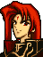
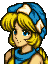
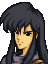
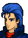

ワールドマップ
セリスたちの長い旅もようやく
その最後の時を迎えようとしていた。
解放軍の活躍は、
帝国の圧政にあえぐ人々を勇気づけ、
各地で住民が蜂起した。
まず最初にシレジアが住民の手に戻り、
そして次に、アグストリアが
解放軍に呼応して兵を挙げた。
だが、グランベル本国にはまだ、
ドズルのブリアン公子率いる
斧騎士団、グラオリッター、
ユングヴィのスコピオ公子率いる
弓騎士団、バイゲリッター、
フリージのヒルダ女王率いる
雷騎士団、ゲルプリッターなどの、
精鋭騎士団が温存され、
そして、バーハラには
イシュタルと魔皇子ユリウスが、
謎の十二魔将を従えて、
不気味な沈黙を守っていた。
イザークでの蜂起からすでに一年余、
十二聖戦士は光と闇に分断され
肉親同士が相打つ悲惨な戦いが続いた。
そして今、最後の聖戦が始まった・・・。
Opening
(ヴェルトマー)

父上は死んだか・・・

皇帝などもはや無用の人間
殺す手間がはぶけたというものです
ふっ、父上も哀れなものよ
きさまに利用されるだけ利用されて
用が無くなれば無惨にすてられるか
すべては殿下の御為です
アルヴィス卿は
ロプトの血を受け継ぎながら
帝国の再興には反対されておりました
卿は炎の聖戦士ファラの気質を
強くお持ちでしたから
いずれは殿下に敵対されたでしょう
わかっているさ、ところで、
反乱軍はシアルフィまで来たそうだな
帝都の守りは大丈夫なのか？
ご安心ください、シアルフィの奪回は
エッダのロダン司祭と
ドズルのブリアン公子に命じてあります
ご心配にはおよびません
そうか・・・
ところでユリアはどうしている？
この城の牢にとらえております
だれか、ユリア皇女を連れてこい！

・・・・・・・・
ユリア、久しぶりだな
私をおぼえているか
ユリウス兄様・・・・
ほおー、おぼえているのか
お前が消えてから
もう七年にもなるというのに
すべてを思い出しました
まるで、きのうのことのように・・・
ふふふ、それはよかったな
優しかった母上のことも思い出したか
・・・あなたは誰なの？
あのとき・・・マンフロイ大司教が
不気味な黒い聖書を持ってきたとき・・・
何もかもが変わってしまったわ
優しかったわたしの兄は
その日を限りにいなくなって
あとに残ったのは恐ろしい力を持った
悪魔の子だけだった
あなたは母様だけでなく
にいさままでわたしから奪った
あなたはいったい誰！？
なぜ、わたし達を苦しめるの！！
私はロプト一族の力を受け継ぐ者
この世界の支配者なのだ
ユリアよ
わが宿敵ナーガの力を受け継ぐ者として
お前にはここで死んでもらわねばならぬ
お待ちくださいユリウス様
この娘にはまだ使いようがあります
あとのことは私めにおまかせください
なにか面白いことでも
かんがえたようだな
わかった、私はバーハラに引き上げる
後のことはお前にまかそう
ただし油断はするなよ！
(ユリウスがワープしてバーハラ城へ)
(エッダ城)

ユリウス殿下のご命令だ
僧兵隊、傭兵隊はこの地を死守せよ！
混成騎士団は
シアルフィ城を奪回するのだ！！
(エッダ軍が登場)
(シアルフィ城)
いよいよだなセリス
最後の聖戦が始まる

聖戦？ これが・・・
そうだ、
ユリウスはロプト一族の末裔として
暗黒帝国の再興をくわだてている
なんとしてもくい止めねばならない
レヴィン、
あなたは何もかも知っているのですね
話してください
いったいどういう事なのです！
すまないセリス
いままでおまえに隠していたことは謝る
私はこの十数年、
世界の真理を探るために旅をしてきた
そして大きな秘密にたどり着いたのだ
秘密・・・？
ロプト帝国の創始者であるガレ司教は
若いときに、海をわたって
世界を旅したという
その目的は
ある伝説の生き物の生き血をのんで
人間にはおよびもつかない力を
手に入れることだった
まさか古代竜族の生き血！？
でも、そんなのは迷信でしょう！
だが・・・、
旅から帰ってきたガレ司教には
不思議な力が備わっていた
もともと野心家だったガレは
その力を利用して若者達を感化させ、
自分の思いのままに動く
悪魔の軍団を作り上げたのだ
では暗黒神ロプトウスというのは？
たぶん古代竜族の一人なのだろう
そして、ガレの子孫には
その竜族の血が受け継がれている
ロプト族の悪しき力は
竜族の力に他ならない
では、我々の先祖である聖戦士とは・・・
伝説ではダーナの砦で
解放軍の十二人の戦士に
神々が降臨したといわれている
しかし・・・
しかし？
セリス、この続きはまた後にしよう
今は敵の攻撃に備えねばならない
会話（アーサー→ティニー）

ティニー
もうすぐ母さんの祖国、フリージだな

うん、でもあまりいいイメージはないわ
にいさまもでしょう
それはな・・・
おまえや母さんを奪ったフリージ家を、
俺はうらみ続けたさ
俺の手で叩きつぶしてやりたかった
でもね、ブルーム伯父様や
イシュタル、イシュトー姉弟は
それほど悪い人ではなかったの
少なくともわたしや母さまには
よくしてくれたわ
母さんを死に追いやったのは
ヒルダだったな
うん、あの人だけはわたしも許せない
できることなら
わたしの手でと思っていた・・・
ティニー、
もうおまえには悲しい思いはさせない
俺が守ってやる、いいな、ティニー！
(ティニー、LUK+1)
会話（アミッド→リンダ）

リンダ、
もうすぐ母さんの祖国、フリージだな
うん、でもあまりいいイメージはないわ
にいさまもでしょう
それはな・・・
おまえや母さんを奪ったフリージ家を、
俺はうらみ続けたさ
俺の手で叩きつぶしてやりたかった
ね、にいさま、私たちの母さまは
なぜ国を裏切って
シグルド軍に加わったの？
仲の良かった姉がシグルド軍に加わって
戦死されたからだよ
私たちの伯母様？
うん、ティルテュという人らしい
そう・・・戦死されたの・・・
おかわいそうに・・・
(リンダ、LUK+1)
会話（ティニー（リンダ）→恋人）
※セリスが恋人の時
セリス様・・・
ティニー！
気をつけろ、きみは前に出てはだめだ！
でも、わたしもお手伝いしたい
セリス様の力になりたいの！
だけど・・・ボクはきみを失いたくない！
わたしはセリス様のお側にいます
わたしはディアドラ様のような運命に
なりたくない
セリス様、お願いです
わたしをお側においてください！
ごめん、そうだったね
ボク達は離れてはいけないんだ
ティニー、一緒に行こう、
きみの力を与えてほしい
はい！ セリス様・・・
(セリス、MGC+3)
※リーフが恋人の時
リーフ様、大丈夫ですか？
ああ、私の事は心配いらない
ティニーこそ気を付けろよ
ここの敵は手強いからな
はい、でも、
わたしはあなたがいてくだされば
大丈夫です
私たちにはトラキアの統一という
大きな仕事が待っているんだ
こんなところで死ぬわけにはいかないぞ
はい、わたしもアルスターに帰って
みんなのために働きたい
うん、だけどアルスターだけじゃない
きみは新トラキア王国の王妃として
私を助けてくれなければね
はい、リーフ様！
(リーフ、MGC+3)
※セティが恋人の時
セティ様、大丈夫ですか？

ああ、私の事は心配いらない
だがティニーこそ気を付けろ
ここの敵は手強いぞ
はい、
わたしはあなたがいてくだされば
大丈夫です
ティニーはかわいいな、
私の宝物だ・・・
・・・セティ様ったら、
そんなことを言われては
困ってしまいます
ははは、すまない
でも、言えるうちに言っておきたくてね
あとから後悔するのはいやだから・・・
セティ様・・・どうかご無事で・・・
(セティ、MGC+3)
会話（パティ→恋人）
※セリスが恋人の時

セリス様、これをどうぞ
あれ、お弁当？
パティが作ってくれたの？
ありがとう
セリス様、これも
あれっ、
のみものまで用意してくれたのか
きみはよく気がつくな
ついでにこれも・・・
うっ・・・それは・・・
パティ手作りのスタミナドリンクよ
きっと元気がでるから
残さずにのんでね
う、うん・・・
(セリス、MHP,SPD+3)
※シャナンが恋人の時
シャナンさまぁ

うむっ・・・
うむっ、じゃないでしょ
ほら、お弁当、私の手作りなのよ
おまえは・・・
まるでピクニックにでも来てるようだな
だってあたし、ヒマなんだもん
このところ、あまり出番もないし
だからといって私のジャマをするな
ここは戦場なのだ
あっ、ひどい・・・
シャナン様まで
あたしをお荷物あつかいにするのね
せっかく心を込めて
お弁当を作ったのに・・・
いいわよ、もう！
おい、パティ・・・
すまぬ、少し言い過ぎた、許せ・・・
じゃあ、お弁当たべてくれる？
ホント？ ああ、よかった・・・
シャナン様、大好きよ！
(シャナン、MHP,SPD+3)
※レスターが恋人の時
レスター、はい！

おっ、パティ、待っていたんだ
もう腹がへって目がまわりそうだぜ
そうだと思って今日は大盛りにしたのよ
ねっ、おいしい？
うまい！ パティの弁当は最高だな
ふふっ、もちろんよ！
(レスター、MHP,SPD+3)
会話（デイジー→恋人）
※ディムナが恋人の時
ディムナってば、なにしてるの？

デイジーか・・・俺、なんかむなしい・・・
どうして？
俺たちって、影うすくないか・・・
そういえば・・・ほとんど影ないね
だろ・・・俺、国に帰る・・・
イザークでふつうに働くよ・・・
うん、この戦いが終わったら
二人で帰ろうか
あたしもつかれちゃったもの・・・
俺たち、みじめだなぁ・・・
(ディムナ、MHP+5)
Robert: battle quote
これは絶好の賞金首だな
悪いが死んでもらうぞ！
ロベルト撃破時
ぐふっ・・・そんなバカな・・・
ボイス初戦時
またつまらぬものを
きらねばならぬのか・・・
ボイス撃破時
お・・・おそろしい奴だ・・・
ロダン初戦時
な、なんとしたことだ・・・
おのれ！
ロダン撃破時
く・・・これも天罰か・・・
ユフィール初戦時
くふふ・・・
ばかな人間どもよ・・・
わが暗黒魔法のえじきとなれ
ユフィール撃破時
ぐぐぐ・・・ユリウス様・・・
お許しを・・・
エッダ城制圧時
エッダか・・・
クロード神父が生きていれば
喜ばれただろうに・・・
ええ・・・クロード様も
父上を助ける為に亡くなられたのですね
でも神父さまの子は・・・
会話（ナンナ（ジャンヌ）→恋人）
※セリスが恋人の時

セリス様・・・
デマジオか、きびしい戦いが続くけど
きみはむちゃをするな
はい、心得ています
でもセリス様が心配です
無理をしないでくださいね
うん、でもね、ここまで来たんだ
もう少しだからがんばるよ
私はセリス様を見守る事くらいしか
できないけど、
ずっと、いのり続けていますから・・・
ありがとうデマジオ、きみの力を感じてる
私を見守っていてほしい
はい、セリス様・・・
(セリス、DEF+3)
※リーフが恋人の時（ナンナ）
リーフ様、
この戦いはいつ終わるのでしょうか
それは私にもわからない
だが、勝利が目前に迫っていることだけは
まちがいないだろう
リーフ様は
レンスターに帰られるのでしょう？
ああ、そのつもりだ
戦乱にあけくれたトラキア半島に
統一国家を作ることは父上のゆめだった
私はその遺志を受け継ぐつもりだ
デマジオもそのつもりでいてほしい
はい、私はどこまでも
リーフ様について行きます
たとえ地の果てまでも・・・
(リーフ、DEF+3)
※リーフが恋人の時（ジャンヌ）

リーフ様！
ああ、ジャンヌか
きみは城に残れって言ったのに
でも・・・
この戦いは
聖戦士の血を持つ者でないと戦えない
きみでは無理だ
足手まといだとは知っています
でも、杖を使うくらいならいいでしょう？
そうだな・・・でも絶対に無理はするなよ
きみには新トラキア王国の王妃として
私を助けてもらわねばならない
こんなところで死なれては困るからな
はい、リーフ様・・・
(リーフ、MHP+5)
※アレスが恋人の時（ナンナ）
アレス、むちゃはだめよ
あなたにはアグストリアの再建という
大きな仕事が残っているのだから

ああ、わかっているさ
こんな戦いで死ぬつもりはない
俺は父上の遺志を継いで
アグストリアを立派な国にしてみせる
よかった、それでこそアレスだわ
エルトシャン王もラケシス母さまも
きっとお喜んでくれると思います
だがデマジオ、俺一人ではダメだ
おまえにも手伝ってほしい
ええ、もちろんよ
私はあなたと生きて行くと決めた、
母のようなまちがいはしないわ
おば上はわが父エルトシャンを
愛しておられたのだろうか？・・・
ええ、異母兄妹ですもの
別に不思議はないでしょう
そういえば俺達は従兄弟だったな
ふふっ、もっと不思議はないでしょう
(アレス、DEF+3)
会話（マナ→アサエロ）

アサエロ、大丈夫？
あなたのきもちもわかるけど
あまり無理をしてはダメだわ

俺にも聖戦士の力があれば
もっと働けるのに・・・
くそぉ、あんまりだぜ！
うん・・・わたしもそう思うけど
でもいいじゃない
今までみんなと一緒に
がんばってきたんだし
わたしたちにも
平民としての意地があるわ
平民かぁ・・・
回りはみんな王族、貴族だものなぁ・・・
いやな世界だぜ、まったく
そうね・・・でも、元気を出して！
国にはあなたの帰りを待ちわびてる
大勢の子供達がいるわ
そうだな、
グチをこぼしてるヒマはないか・・・
俺にはマナもいてくれるしな・・・
ふふっ、アサエロったら
(アサエロ、MHP+5)
フィッシャー初戦時
くそっ、その首、
たたき落としてやる！！
フィッシャー撃破時
な、なんてことだ・・・
ブリアン初戦時
よくも父を殺してくれたな
ドズル家三代にわたるうらみ
思い知れ！
ブリアン撃破時
スワンチカの斧が
こうもたやすく敗れるとは・・・
本当にこれで良かったのか・・・
ダゴン初戦時
くふふ・・・
ばかな人間どもよ・・・
わが暗黒魔法のえじきとなれ
ダゴン撃破時
ぐぐぐ・・・ユリウス様・・・
お許しを・・・
ドズル城制圧時
ドズルの家も聖戦士の一人なのに
まったくバカな話だ
これもすべて
あのランゴバルト卿の責任だな・・・
それでレヴィン、聖戦士の力は
誰から与えられたものなの？
神々とはいったい・・・
はっきりとは分からないが
この大陸の混乱が
竜族の力によるものだと知った何者かが
我々を救うために
他の世界からやってきたようだ
その者たちは陥落間近いダーナの砦に
突然現れたという
聖典にある
ナーガ神と十一の神々の降臨だね
神々は人間に姿を変えていた
光神ナーガは幼い少女
火神サラマンドは老人の姿というふうに
そして選ばれた十二人の戦士達と
血の盟約を交わした
血の盟約？
神々は指先に傷をつけて血を流し
その血を戦士達に与えたのだ
！？・・・
つまり、聖典に言う神々も
ロプトウスと同じく古代竜族だった
解放軍の戦士は
竜族の血を体内に取り入れて
聖戦士に生まれ変わったのだ
竜族達は生まれたばかりの聖戦士たちに
自分たちの力を封印した武器を与え、
そして、
いくつかのいましめを言い残して
去っていったのだ
そうだったのか・・・
聖戦士の力は竜族のもの・・・
ロプトウスは竜族の中で
最も邪悪で恐ろしい力を持つ一族だ
竜王ナーガは
解放軍の指導者だったヘイム司祭に
自分の血を与え、
ロプトの力に対抗させようとしたのだ
つまり他の竜族では
ロプトウスには勝てないということ？
かなり難しいだろうな
みんなが協力しあった上に
ナーガの力が必要だろう
しかし・・・その力を受け継ぐべき
ヘイムの子孫で
今も生き残っているのは
ディアドラ皇女の三人の子供達だけだ
だが第一皇子のセリスも
第二皇子のユリウスも
ナーガの血は受け継いではいない
受け継いだのはユリウスの双子の妹・・・
ユリア皇女だけと最近知った
な、なんだって！？
そうだ、私も気づかなかったが
ユリアはユリウス皇子の双子の妹
そして、おまえの妹でもある・・・
ユリアが妹・・・そんな・・・
これでユリアがとらわれた謎もとけた
セリス、ユリアをなんとしても
助けなければならない
ユリウスと戦うためには
ユリアの力が絶対に必要なのだ！！
(セリス軍フェーズ 終了後)
(フリージ城)

なんだって！
ドズルまで落ちたと言うのかい！
ふん、どいつもこいつも
ふがいない奴ばかりだ
いいよ、あたしが出てやるよ
反乱軍をこの城に引きつけて
一気に勝負を決めてやる
ユングヴィのスコピオに連絡するんだよ
わがゲルプリッターが
敵を引きつけるから、
スコピオのバイゲリッターは
後方からおそいかかれと
奴等を挟み撃ちにして、
一人残らず殺すんだよ！
(フリージ軍が登場)
フリージ軍に近づいたとき
(マップ左下)
(ユングヴィ軍が登場)
ふっ、反乱軍め、罠にかかったか
よし、森を突っ切って
敵の背後に回り込め！
フリージ軍と協力して敵を包囲するのだ！
会話（ラナ（マナ）→恋人）
※セリスが恋人の時

セリス様、もう少しですね
うん、ラナもよくがんばってくれた
ありがとう
いいえ、わたしなんて
少しもお役に立てませんでした
でも、
セリス様のおそばにいられただけでも
幸せです
ラナとはもう長いつきあいだね
小さいころからずっと一緒だった
ええ、よく一緒にあそびました
あのころの思い出は楽しいことばかり
でも、まさかこんなことになるなんて・・・
でも私は小さいときから
ラナが好きだったよ
セリス様・・・そんな事を言われては
心が弱くなってしまいます
わたしはユリア様に申し訳なくて・・・
ラナ・・・・・・・・
(セリス、MDF+3)
※スカサハが恋人の時
スカサハ・・・

うん・・・？
あなたはわたしの誇りよ
おいおい、急にどうしたんだ？
死なないでね、スカサハ
ああ、きみをおいては死ねないよ
・・・スカサハ、わたしね
うん？
・・・・・・あなたが好きよ
(スカサハ、MDF+3)
※ファバルが恋人の時（ラナ）
ファバル・・・
うん・・・？
あなたはわたしの誇りよ
おいおい、急にどうしたんだ？
死なないでね、ファバル
ああ、きみをおいては死ねないよ
ファバル、わたしね
うん？
・・・・・・あなたが好きよ
(ファバル、MDF+3)
会話（ラクチェ（ラドネイ）→恋人）
※セリスが恋人の時

セリス様、待ってください！
ラクチェ・・・・？
私も一緒に行きます！
うん？
それはいいけど、どうして？
なんだか恐ろしくて・・・
ラクチェがそんな事をいうなんて
めずらしいな
わたしは・・・
わかっているさ、一緒に行こう
きみが側にいてくれるなら心強い
セリス様・・・
(セリス、STR+3)
※シャナンが恋人の時
シャナン様、
ようやくここまで来ましたね
うむ、長い道のりだったな
イザークの人達は
今頃どうしているでしょう
変わった事がなければいいのだけど
ラクチェは国が恋しくなったか
そんなことはありません！
私はもう子供ではないのですよ！
そうかな、私にはまだ子供に見えるが
シャナン様！！
ははは、そんな恐い顔をするな
美しい顔がだいなしだぞ
シ、シャナン様・・・
(シャナン、STR+3)
※ヨハンが恋人の時
ヨハン、あなた大丈夫？

さすがの私も、
この戦いについて行くのは苦しいな
だが、おまえの愛さえあれば
私はたえてみせるぞ
あなたって人は・・・
でも、愛してしまったんだもの
しかたないわね・・・
愛に後悔など無用だ
ラクチェ、笑って見送ってくれ
うん、がんばるのよ、ヨハン
ああ、ラクチェ・・・
(ヨハン、STR+3)
※ヨハルヴァが恋人の時
ヨハルヴァ、大丈夫なの？

くぅ、さすがの俺も
この戦いは苦しいぜ
だが、ドズル公国も取り戻したことだし
もう少しがんばってみるよ
ええ、でもむちゃはだめよ
あなたには国を立て直す義務があるのよ
ああ、わかっているさ
そうでなくっちゃ
死んだオヤジやアニキは
うかばれないからな
ラクチェ、手伝ってくれるよな
ええ、あなたにはいろいろと
世話になったしね
うぉぉ、ありがたいぜ
好きだぁ、ラクチェ！！
もうっ、ヨハルヴァったら、バカね！
(ヨハルヴァ、STR+3)
スコピオ初戦時
わが父アンドレイのうらみ、
今こそ晴らしてくれる！！
スコピオ撃破時
ちっ・・・なんてことだ・・・
ヒルダ初戦時
ふん、そう度々やられて
たまるものか！
ヒルダ撃破時
くうー、くやしい・・・
イシュタル・・・このうらみ
晴らしてくれ・・・
バラン初戦時
くふふ・・・
ばかな人間どもよ・・・
わが暗黒魔法のえじきとなれ
バラン撃破時
ぐぐぐ・・・ユリウス様・・・
お許しを・・・
フリージ城制圧時
レヴィン、
ついにフリージまで来たね
でも、バーハラに送られた子供達は
大丈夫だろうか
無事だといいのだけど・・・
うむ、その事について
この者が話をしたいそうだ
あなたは？
私はアルヴィス皇帝の側近だった
フェリペと申します
実は皇帝の密命を受けて
捕らえられていた子供達を
このフリージの街に保護しておりました
えっ！？ それは本当ですか！
子供達は全員無事なのですか！！
はい、みんな元気で
街の修道院に隠れております
でも、フリージは
あのヒルダが支配していたのに
よく無事でしたね
実は・・・イシュタル王女が
密かに助けて下さったのです
兵士達は王女を恐れて、
修道院に近づく事すらできませんでした
イシュタル王女が！？
でも、どうして・・・・
イシュタル様は
もともと、お優しいお方でした
今回のことでも、
みずから進んで協力して下さったのです
バーハラ王宮から
子供達を連れ出したのも
イシュタル様ご自身でした・・・
そうか・・・でも、よかった
子供達が無事だと知れば
人々は喜んでくれるでしょう
フェリペどの、礼を言います
セリスよ、よかったな
これで目的のひとつは達成された
われらの戦いはムダではなかったのだ
うん、でもレヴィン、
ユリアはまだ見つからないんだ
彼女は・・・どこにいるのだろう
うむ、ここにもいないとなると
あとは帝都バーハラか
ヴェルトマーか、どちらかだな
バーハラにはユリウスがいる・・・
そうだ、彼と戦う前に
ユリアを見つけなければならない
ユリアの力無くしては
とても勝ち目はないのだ
ユリアは戦えるのだろうか
双子の兄であるユリウスと・・・
それは・・・おまえしだいだな・・・
(セリス軍フェーズ 終了後)
(バーハラ城)

ではユリウス様、
わたしはヴァイスリッターを率いて
帝都の守りを固めます
しばらくお側を離れることを
お許しください
フッ、どうしたイシュタル、
何をあわてている？
奴等がどれほどの数で来ようとも、
私を倒すことなど不可能なのだ
わざわざおまえが出ることもなかろう
はい・・・それはよくわかっています
しかし、
私も誇りあるフリージ家の魔法戦士
両親や兄弟を殺されて
おめおめと生きてはおれません
どうか戦う機会をお与えください
おまえは死に急いでるようだな
なぜだ、イシュタル
私から逃げたくなったか
いえ・・・そんなことは・・・
私はユリウス様を愛しております・・・
ふふっ、まあいいさ
戦いたくば戦え、止めはしない
はい・・・申し訳ありません
メング、ブレグ、メイベル、出陣するぞ
私とともに来い！
はっ、イシュタル様
では一気にけりをつけるとするか
十二魔将よ、おまえたちも出陣せよ！
アリオーンの傭兵部隊にも出撃を命じよ
遊びは終わった
総力をもって反乱軍を始末する！！
(ユリウス率いるバーハラ軍が登場)
(ヴェルトマー城)
ふぉふぉ・・・さわがしいことよの
ユリアよ、おまえの出番じゃ
帝国にあだなすものどもをしとめてこい
はい・・・マンフロイ大司教さま・・・
(マンフロイ率いるヴェルトマー軍、ユリアが登場)
(セリス軍フェーズ 終了後)
(マップ右下)
(アリオーン率いるトラキア軍が登場)

もはや我らには帰る場所はない
全軍、私に続け
シアルフィ城を攻略して
祖国奪回の足がかりにする
トラキア竜騎士団の最後の意地、
奴等にとくと見せてやれ！！
会話（セリス→ユリア）
※マンフロイ生存時
ユリア、しっかりしろ！
いったいどうしたんだ！！
ククク・・・
マンフロイ様ニ サカラウモノ、
ミナ殺ス・・・
だめだセリス、
ユリアは暗黒魔法であやつられている
マンフロイを倒してから
もう一度、語りかけるのだ！
※マンフロイ死亡時
ユリア！！ しっかりするんだ！
・・・
はっ・・・セリスさま！？
わたし・・・どうしたのです？
きみはマンフロイの術にかかって
あやつられていたんだ
マンフロイ・・・そうだわ
わたし、あの男に捕らえられて・・・
でも良かった
きみが無事でいてくれて
セリス様、わたし・・・
もう何もいわなくていい
レヴィンからすべてをきいた
ユリア・・・ごめん
ぼくがもっとしっかりしてれば・・・
いいえ、これで良かったの
わたし自分がこれまで生きてきた理由を
初めて知ったの
わたしは戦う
逃げたりはしないわ
そうか・・・ユリアは強いな
でも、きみの言うとおりだ
悲しい運命だけど
逃げるわけにはいかない
ぼく達、最後まであきらめてはだめなんだ
会話（アルテナ→アリオーン）
兄上！ もういいかげんにして！
なぜわたしのきもちを
分かってくれないのです！！
アルテナ！？
兄上はいくじなしだわ！
意地や見栄にこだわって
大切なものを見失ってる
おまえは私に何をせよと？
セリス皇子を見て！
彼が何のために戦っているのか
誰のために苦しんでいるのか、
少しはかんがえてください
正義はセリス皇子にあると言う事か・・・
兄上・・・わたしはもう戦えない
どうしても分かってくれないのなら
わたしを倒してから行って
わたしは・・・兄上の手にかかるなら
・・・悔いはありません
アルテナ・・・わかった・・・
もう何も言うな
私がまちがっていた・・・
傭兵としての最後の仕事はセリスの為、
いや・・・アルテナ、
おまえの為に働いて見せよう
アリオーン・・・にいさま・・・
会話（フィー（フェミナ）→恋人）
※セリスが恋人の時

セリス様、
敵の様子を見てきましょうか？
いや、むちゃはするな
この戦いは今までとはちがう
フィーは私の側から離れるな
はい・・・
フィーはシレジアが心配か？
うん、少しね
あちらでも戦いが始まったのでしょう
住民達が蜂起したようだ
戦いは有利に進んでいるそうだよ
本当ですか！ ああ、よかった・・・
フィーはシレジアに帰りたい？
そんなことはありません！
わたしはセリス様のお側が一番いいです
そうか・・・ありがとうフィー
私はフィーがいてくれて心強いな
セリス様はわたしのゆめだから・・・
ずっとお側にいたいです・・・
(セリス、SKL+3)
※アーサーが恋人の時
アーサー、何してるの？
何してるって、
戦ってるのに決まってるだろ
フィーは気楽でいいな
まっ、ごあいさつね！
ほらっ、またすぐふくれる
そんなことだからきみは・・・
可愛げがないって言いたいのでしょ
悪かったわねっ
ちがうよ、誤解されるって言いたいのさ
フィーは可愛いよ、
ぼくの大事な人だもの
ア、アーサー・・・、やめてよ！
フィー、ぼく達、一緒になろうよ
この戦争が終わったら
シレジアに帰って一緒にくらそう
アーサー・・・本気なのね・・・
うん、うれしい・・・ありがとう・・・
(アーサー、SKL+3)
※オイフェが恋人の時（フィー）
オイフェさん、
敵の様子を見てきましょうか？

フィーか、やめておけ、
弓でうち落とされてしまうぞ
あのね、オイフェさん・・・
うん・・・？
あなたってえらいと思うな
自分の人生を犠牲にして
皇子ために生きてきたのでしょう
うむ・・・私たちは前の戦争で
心ならずも生き残ってしまった
そして、われらに残された使命は
死ぬこと以上に辛いことだった
それはきみの父上や母上も同じだ・・・
このごろね、少しだけわかってきたの
父や母の生き方が・・・
わたし、子供だった
オイフェさんとお話しするようになって
いろんなものが見えてきた
そうか・・・私も昔、
フュリーどのには世話になったからな
これで少しは恩返しができたかな
あの・・・オイフェさん、
これからもいろいろ教えてくださいね
わたしはもっと大人になりたいの
そんなに背のびをしなくていいよ
少しずつ大人になればいい
だめ！ それじゃオイフェさん
おじいさんになってしまうもの！
おいおい、フィー・・・
(オイフェ、SKL+3)
メング初戦時
わるいね、死んでもらうよ！
メング撃破時
イシュタル様、ご武運を・・・
ブレグ初戦時
・・・・・しね！
ブレグ撃破時
イシュタル様・・・姉上・・・
メイベル初戦時
くらえっ 必殺の剣！！
メイベル撃破時
イシュタル様、
お許しください・・・
Ishtar: battle quote
もはや言うべき言葉はない・・・
きさまに雷神イシュタルの
最後の戦いを見せてやろう！
イシュタル撃破時
ユリウス様・・・わたしは・・・
Julia: battle quote
ククク・・・・・・・
ユリア撃破時
ウウッ・・・・・・・・・・
ああ・・・・・・セリス・・・さま・・・
Arion: battle quote
すまぬな・・・
アリオーン撃破時
く・・・アルテナ・・・
マンフロイ初戦時
ばかな・・・わしが生涯をかけて
築いてきたものを・・・
くっ、きさま達、許さぬ！！
マンフロイ撃破時
ユリウス様・・・
ロプト帝国をどうか・・・
ヴェルトマー城制圧時
レヴィン、ナーガの聖書が
この城に隠されているというのは
本当なのか
ああ、アルヴィス皇帝が
バーハラ王宮から持ち出して
ここに隠したらしい
そうだな、フェリペどの
はい、この宝物殿にあるはずです
しかしカギがないと開けられません
カギだと？ それはどこにあるのだ
皇帝はディアドラ王妃の形見であった
サークレットに
カギを仕込まれていました
あのサークレットさえあれば
開くことができるのですが・・・
ディアドラ王妃のサークレット・・・
ユリアがヴェルトマー城に入ったとき
ユリア、これが宝物殿だ
そのくぼみに
サークレットのかざりを当てて見ろ
はい・・・
やはり開いたな・・・あっ、あったぞ！
これがナーガの聖書だ！！
ユリア、ほら、受け取れ！
これが・・・
ああっ、不思議なきもちがする
なにかとてもなつかしいような・・・
暖かいきもちが・・・
(「ナーガ をてにいれた！」)
Julius: battle quote
ふふふ・・・血迷ったか
おまえごときに私は倒せぬ
ユリウス撃破時
グワォォォォォォォォォォー
村訪問１
勇者の末裔達よ、
そなた達に聖戦士の詩をきかせよう
～黒騎士ヘズル、
魔剣ミストルティンをもって闇を裂き
聖剣士オード、
神剣バルムンクをもって闇を打ち払い
聖騎士バルド、
聖剣ティルフィングをもって
闇をてらす
そして最後に聖者ヘイム
ナーガの聖書をもって天にいのる
いのりは光、光は白い竜となり
暗黒の竜に戦いを挑む
白き竜と黒き竜
光と闇の、
いつ果てるともしれぬ長い戦い
いきつくところは勝利か
それとも死か
だが私は恐れはしない
たとえ我らの戦いが
敗北に終わろうとも
我らが求めた光は
決して失われはしない
私は信じる
我らの心を受け継ぐ者を
私は信じる
我らの光をうけつぐものを～
どうじゃな、心地よいひびきじゃろ
村訪問２
勇者よ、聖戦士の末裔たちよ
この戦いが、真の聖戦であるかどうかは
そなた達の手に委ねられておる
これまでにたくわえてきた
力と勇気のすべてを、
この戦いにぶつけるのだ
そして、あの二つの光がさすところに、
そなた達の未来があると信じよ！